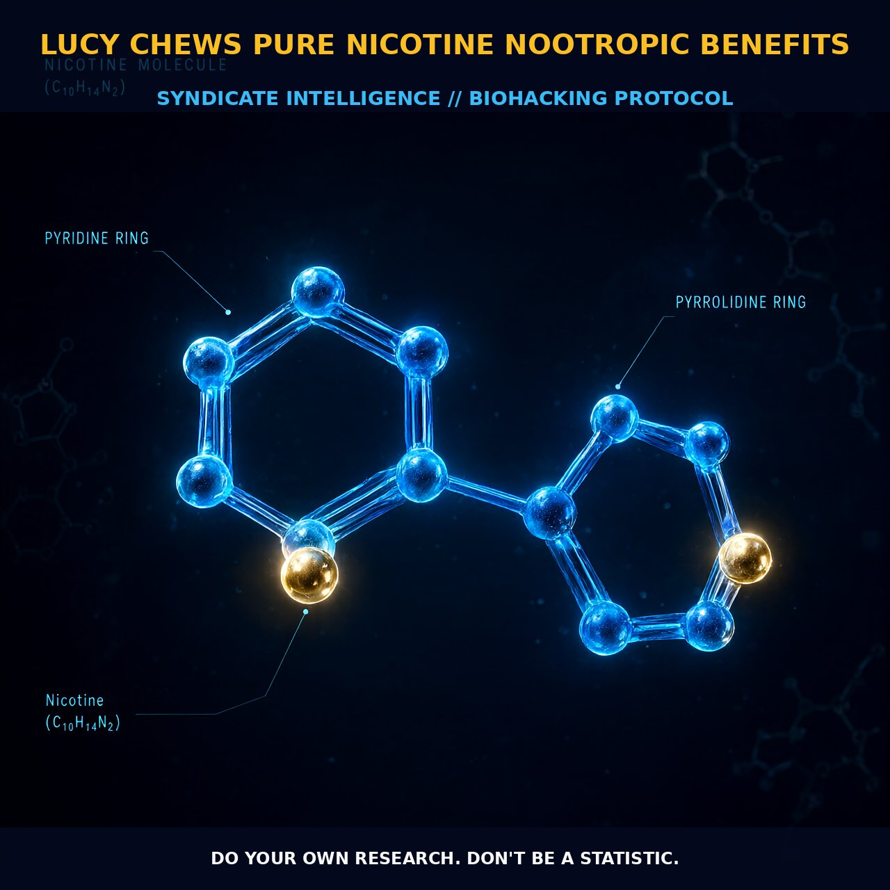

Pharmacokinetic Modulation of Pure Nicotine: Sustained Nootropic

1. Pharmacokinetic Modulation and Absorption Dynamics
Lucy Chews represent a sophisticated evolution in oral nicotine delivery, operating on a distinct pharmacokinetic profile that diverges significantly from traditional gum or tobacco forms. The core mechanism hinges on controlled release rather than rapid bolus delivery, designed to modulate the rate of nicotine absorption with precision. By parking the chew between the gum and cheek after initial mastication, the product minimizes excessive trigeminal nerve firing associated with continuous chewing. This posture maintains a steady surface area for mucosal uptake, ensuring consistent transdermal transfer without the mechanical fatigue of constant activity.
Each piece delivers approximately 4 mg of pure nicotine, a dose meticulously calibrated to provide sustained neurochemical activation. Unlike the euphoric rush characterized by rapid spikes in smoking or vaping, this formulation avoids the steep decline and subsequent crash often observed with quicker-absorbing forms. The sustained release over a period of 30 minutes to an hour allows for a smoother accumulation of nicotinic acetylcholine receptor activation, creating a stable neurochemical baseline that supports prolonged cognitive function.
The formulation intentionally excludes artificial sweeteners like aspartame, which are known to interfere with brain function promotion. This ensures that the neurocognitive benefits are derived primarily from the nicotine molecule itself rather than being diluted by metabolic distractions. By avoiding disruptive additives such as acetals, aldehydes, and flavoring agents found in cigarettes or vapes, Lucy Chews preserve the integrity of the lung microbiome and systemic toxicity profile, establishing oral administration as a cleaner route for daily nootropic utilization compared to inhalation methods.
2. Biological Leverage and Cognitive Optimization
The primary nootropic leverage of nicotine stems from its precise modulation of the mesolimbic dopamine system, often termed the brain’s pleasure pathway. This receptor engagement refines motor skills and heightens the capacity for sustained attention without inducing overwhelming euphoria at low doses. Users exhibit measurable improvements in short-term memory, reaction time, and coordination, demonstrating faster, more precise motor function such as controlled handwriting and improved finger tap speed without sacrificing accuracy.
Beyond acute performance metrics, low-dose oral delivery supports stable energy levels by avoiding the sharp peaks and troughs associated with higher bolus doses. This is particularly effective when synergized with caffeine, creating a state of focused alertness ideal for cognitive tasks requiring prolonged vigilance, such as authorship or deep analytical work. The controlled release minimizes the risk of toxicity and nausea, allowing for daily use that enhances cognitive processing speed and mental clarity.
Crucially, this biological stability separates the addictive potential of nicotine from its cognitive benefits. The low-frequency stimulation prevents the habituation issues often seen with the constant high-dose exposure typical of smoking a pack a day. By maintaining a consistent neurochemical baseline throughout the day, users can enhance cognitive processing speed while avoiding the jittery or fatigued states associated with erratic dosing schedules.
3. Tactical Protocol Implementation
For optimal nootropic effect, aim for a dosage range that aligns with the 1 to 2 mg baseline recommendation for general enhancement, utilizing Lucy Chews as a targeted tool rather than a continuous staple. One piece, providing roughly 4 mg, serves as an effective single dose when used occasionally to boost specific cognitive windows, such as during writing sessions or morning focus blocks. This approach allows the user to gauge individual sensitivity without overloading the system.
If integrating with other nootropics like Noopept or caffeine, time the chew to coincide with peak activity periods to maximize synergistic effects on dopamine and acetylcholine pathways. The slow release supports prolonged attention spans better than the rapid spike of a cigarette, offering superior control over plasma levels by adjusting mastication frequency. Avoid continuous all-day chewing which may over-stimulate the trigeminal nerve; instead, park the chew and allow it to dissolve slowly to maintain a steady state of nicotinic activation without jaw fatigue.
Monitor your body’s response to ensure you remain within safe physiological parameters for long-term use. While nicotine has potential benefits for conditions like Alzheimer’s, the primary nootropic value lies in its ability to sharpen focus and motor precision when used deliberately rather than out of habit. By treating the chew as a tactical instrument for cognitive enhancement, users can extract maximum utility from each session.
Prostar Life Hack
The Parking Method: Do not chew continuously. After the initial mastication, park the chew between your gum and cheek. This simple mechanical adjustment minimizes trigeminal nerve overstimulation while maximizing mucosal surface area for a steady, crash-free 4 mg dose that sustains focus without jaw fatigue.
Prostar Life Hack
The Parking Method: Do not chew continuously. After the initial mastication, park the chew between your gum and cheek. This simple mechanical adjustment minimizes trigeminal nerve overstimulation while maximizing mucosal surface area for a steady, crash-free 4 mg dose that sustains focus without jaw fatigue.
[ AUTHOR: LEAD TECHNICAL RESEARCHER ]